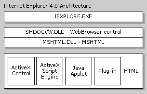

| ||
This section explains the architecture of Microsoft® Internet Explorer 4.0 and later, and provides information you'll find helpful when reusing these components.
Internet Explorer uses Microsoft® ActiveX® Controls and Active Document interfaces to connect components. The following diagram provides a high-level overview.

IExplore.exe is at the top level; it is a small application that is instantiated when Internet Explorer is loaded. This executable uses Internet Explorer components to perform the navigation, history maintenance, favorites maintenance, HTML parsing and rendering, and so on, while it supplies the toolbar and frame for the stand-alone browser. This executable directly hosts the Shdocvw.dll component.
Shdocvw.dll in turn hosts the Mshtml.dll component, as well as any other Active Document component (such as a Microsoft® Office application) that can be loaded in-place in the browser when the user navigates to a specific document type. Shdocvw.dll supplies the functionality associated with navigation, in-place linking, favorites and history management, and PICS support. This DLL also exposes interfaces to its host to allow it to be hosted separately as an ActiveX control. The Shdocvw.dll component is more frequently referred to as the WebBrowser control. In-place linking refers to the ability to click a link in the HTML of the loaded document and to load a new HTML document in the same instance of the WebBrowser control. If only Mshtml.dll is being hosted, a click on the link results in a new instance of the browser being instantiated.
Mshtml.dll is the component that performs the HTML parsing and rendering in Internet Explorer 4.0 and later, and it also exposes the HTML document through the Dynamic HTML Object Model. This component hosts the scripting engines, Microsoft virtual machine, ActiveX Controls, plug-ins, and other objects that might be referenced in the HTML document that is loaded. Mshtml.dll implements the Active Document server interfaces, which allows it to be hosted using standard COM interfaces.
This architecture is recursive in that Shdocvw.dll is in turn hosted by Mshtml.dll in a frameset situation. In this case, each instance of a frame is another instance of Shdocvw.dll hosting Mshtml.dll.
As this is an OLE-based architecture, the ambient properties that are commonly used by ActiveX Controls can also be applied to the Internet Explorer components. In this way, a host of the WebBrowser control can set an ambient property that will filter down to all the frames and controls hosted in the loaded document.
The WebBrowser control provides a rich set of functionality that a host typically requires, such as that for in-place linking. Therefore, it is much more applicable for most applications to host this control instead of MSHTML for browsing or viewing HTML documents. Hosting MSHTML is recommended only for specialized applications, such as parsing HTML. The WalkAll sample demonstrates how to host MSHTML.
It should also be noted that although hosting MSHTML is slightly more lightweight than hosting the WebBrowser control, the savings rarely justify the extra work involved in implementing functionality that is already available in the WebBrowser. It is very likely that the WebBrowser will already be loaded in memory, and navigating to a frameset page will also result in the WebBrowser being loaded as part of the standard working set.
Hosts of the WebBrowser and MSHTML components have control over certain functionality. In the case of the WebBrowser control, this includes navigation as well as receiving events when the document is loaded. Hosts of either component can obtain extra control over functionality by implementing the IDocHostUIHandler and IDocHostShowUI interfaces. A common use for these interfaces is overriding the context menus that are supplied by default for the browser. Uses also include setting the 3-D border, overriding the location in the registry where options are stored, and extending the Dynamic HTML Object Model.
These interfaces are obtained from the host by the component calling QueryInterface on the IOleClientSite interface implemented by the hosting application.
A common requirement of hosting the WebBrowser control is the ability to override or add to the context menus that are displayed as the result of a right-click in the browser window. This is of particular interest to applications that are using the WebBrowser control to view rich content but do not want the user to know that HTML is being viewed. This is also advantageous for applications that do not want the user to be able to view the HTML source for the content.
There are two techniques available to achieve this. The first involves the use of the IDocHostUIHandler interface and allows an application to disable or replace the context menus. The second technique involves the use of the registry and allows the existing context menus to be extended.
The WebBrowser control's context menus can be overridden entirely by implementing the IDocHostUIHandler::ShowContextMenu method. Returning E_NOTIMPL or S_FALSE from this method indicates to the WebBrowser that it should display its own standard context menu. However, returning S_OK causes the WebBrowser not to display its menus, and it assumes that the host has performed the appropriate action. The host can disable all context menus or bring up its own context menus. The parameters supplied to the host that implements this method allow the host to identify which of the default menus will be displayed by the WebBrowser, as well as the coordinates where the menu will be displayed. This provides the host the full context for the menu. For example, the host can choose only to override the image context menus and not the standard context menus.
Items can be added to the existing context menus of the WebBrowser by placing entries in the registry and linking these to URLs that execute script. To add items to the standard WebBrowser context menus, create or open the following key:
HKEY_CURRENT_USER
Software
Microsoft
Internet Explorer
MenuExt
Under this key, you create a key whose name contains the text you want displayed in the menu. The default value for this key contains the URL that will be executed. The key name can include the ampersand (&) character, which will cause the character immediately following the & to be underlined. The URL will be loaded inside a hidden HTML dialog box, all the inline script will be executed, and the dialog box will be closed. The hidden HTML dialog's external.menuArguments property contains the window object of the window on which the context menu item was executed.
The following registry entry adds an item with the title My Menu Item to the WebBrowser context menu and executes the inline script contained in the file c:\myscript.htm.
HKEY_CURRENT_USER
Software
Microsoft
Internet Explorer
MenuExt
My Menu Item = "file://c:\myscript.htm"
The contents of c:\myscript.htm are as follows:
<SCRIPT LANGUAGE="JavaScript" defer>
var parentwin = external.menuArguments;
var doc = parentwin.document;
var sel = doc.selection;
var rng = sel.createRange();
var str = new String(rng.text);
if(str.length == 0)
rng.text = "MY INSERTED TEXT";
else
rng.text = str.toUpperCase();
</SCRIPT>
This script obtains the parent window object from external.menuArguments. The parent window object is the WebBrowser in which the context menu item was executed. The script then obtains the current selection and, if no selection is present, inserts the text "MY INSERTED TEXT" at the point where the context menu was executed. If there is a selection present, the selected text is changed to uppercase.
Under the item registry key created earlier, there are a couple of optional values. One of these specifies on which context menus this item will appear. The other specifies that the script should be run as a dialog box.
The "Contexts" DWORD value specifies the context menus in which an item will appear. It is a bit mask consisting of the logical OR of the following values (defined in Mshtmhst.h). These values correspond to the constant passed in an IDocHostUIHandler::ShowContextMenu call.
(0x1 << CONTEXT_MENU_DEFAULT) (evaluates to 0x1) (0x1 << CONTEXT_MENU_IMAGE) (evaluates to 0x2) (0x1 << CONTEXT_MENU_CONTROL) (evaluates to 0x4) (0x1 << CONTEXT_MENU_TABLE) (evaluates to 0x8) (0x1 << CONTEXT_MENU_TEXTSELECT) (evaluates to 0x10) (0x1 << CONTEXT_MENU_ANCHOR) (evaluates to 0x20) (0x1 << CONTEXT_MENU_UNKNOWN) (evaluates to 0x40)
So if, for example, you want this simple extension to appear only in the default menu and the text selection menu, you could create a DWORD value in the registry under the My Menu Item key called "Contexts" and set it to 0x1. From C/C++ code, this can be expressed as:
(0x1 << CONTEXT_MENU_DEFAULT) | (0x1 << CONTEXT_MENU_TEXTSELECT)
The other optional registry DWORD value is "Flags". There is only one bit (0x1) valid for this registry value; it is defined as MENUEXT_SHOWDIALOG in Mshtmhst.h. When this bit is set, the script is run just as if it had been called through the showModalDialog method. The window that runs the script is not hidden, and the dialog box is not automatically closed after inline and onload script finishes. The external.menuArguments value still contains the window object where the user selected the menu item.
Whenever a context menu extension is triggered, the event object off the main window (external.menuArguments.event) contains information about where the user clicked and which context menu was shown. The mouse coordinates are valid along with event.srcElement. The event.type value contains one of the following strings, indicating which context menu was shown to the user:
This example creates a new menu item on the default context menu. This item, called Show In New Window, can be used to launch a new window that displays only a specific portion of the current document. So if something is deeply nested in a frameset, you can easily launch a specific frame in its own window.
Here are the contents of a .reg file that can be run to insert the correct registry settings. Call this Example2.reg. Double-clicking this file in Microsoft® Explorer will insert the settings in your registry.
REGEDIT4
[HKEY_CURRENT_USER\Software\Microsoft\Internet Explorer\MenuExt\Show in New Window]
@="file://c:\\example2.htm"
"Contexts"=dword:00000001
Here are the contents of c:\example2.htm:
<SCRIPT LANGUAGE="JavaScript" defer>
open(external.menuArguments.location.href);
</SCRIPT>
It is possible for the hosting application to extend the Dynamic HTML Object Model so that scripts can refer to functionality implemented by the host. Such scripts refer to the host by specifying the external object that is available from the window object. For example, a reference to "window.external.speech" will call the host to resolve the name "speech". All standard script within the document will be executed normally.
This extension mechanism is implemented in the host by providing an IDispatch interface for the object model extension that will have GetIDsofNames and Invoke called on it to resolve any references to the external object. The IDispatch that the host provides is obtained by the WebBrowser or MSHTML component by calling the host's IDocHostUIHandler::GetExternal method.
For an example of how to extend the Dynamic HTML Object Model, see the Driller sample.
Hosts can control certain aspects of downloading, such as frames, images, Java, and so on, by implementing both IOleClientSite and an ambient property defined as DISPID_AMBIENT_DLCONTROL. When the host's IDispatch::Invoke method is called with dispidMember set to DISPID_AMBIENT_DLCONTROL, it should place zero or a combination of the following values in pvarResult.
| DLCTL_BGSOUNDS | The browsing component will play background sounds associated with the document. |
| DLCTL_DLIMAGES | The browsing component will download images from the server. |
| DLCTL_DOWNLOADONLY | The browsing component will download the page but not display it. |
| DLCTL_FORCEOFFLINE | The browsing component will always operate in offline mode. This causes the BINDF_OFFLINEOPERATION flag to be set even if the computer is connected to the Internet when making requests through URLMON. |
| DLCTL_NO_BEHAVIORS | The browsing component will not execute any behaviors. |
| DLCTL_NO_CLIENTPULL | The browsing component will not perform any client pull operations. |
| DLCTL_NO_DLACTIVEXCTLS | The browsing component will not download any ActiveX Controls in the document. |
| DLCTL_NO_FRAMEDOWNLOAD | The browsing component will not download frames but will download and parse the frameset page. The browsing component will also ignore the frameset and render no frame tags. |
| DLCTL_NO_JAVA | The browsing component will not execute any Java applets. |
| DLCTL_NO_METACHARSET | The browsing component will suppress HTML character sets reflected by META elements in the document. |
| DLCTL_NO_RUNACTIVEXCTLS | The browsing component will not execute any ActiveX Controls in the document. |
| DLCTL_NO_SCRIPTS | The browsing component will not execute any scripts. |
| DLCTL_OFFLINE | Same as DLCTL_OFFLINEIFNOTCONNECTED. |
| DLCTL_OFFLINEIFNOTCONNECTED | The browsing component will operate in offline mode if not connected to the Internet. This causes the BINDF_GETFROMCACHE_IF_NET_FAIL flag to be set if the computer is connected to the Internet when making requests through URLMON. |
| DLCTL_PRAGMA_NO_CACHE | The browsing component will force the request through to the server and ignore the proxy, even if the proxy indicates that the data is up to date. This causes the BINDF_PRAGMA_NO_CACHE flag to be set when making requests through URLMON. |
| DLCTL_RESYNCHRONIZE | The browsing component will ignore what is in the cache and ask the server for updated information. The cached information will be used if the server indicates that the cached information is up to date. This causes the BINDF_RESYNCHRONIZE flag to be set when making requests through URLMON. |
| DLCTL_SILENT | The browsing component will not display any user interface. This causes the BINDF_SILENTOPERATION flag to be set when making requests through URLMON. |
| DLCTL_URL_ENCODING_DISABLE_UTF8 | The browsing component will disable UTF-8 encoding. |
| DLCTL_URL_ENCODING_ENABLE_UTF8 | The browsing component will enable UTF-8 encoding. |
| DLCTL_VIDEOS | The browsing component will play any video clips that are contained in the document. |
Hosts of the browsing components can implement their own security management and override the settings that exist for the WebBrowser. This is achieved by implementing the IInternetSecurityManager interface. The browsing component will obtain this interface by calling the host's IServiceProvider::QueryService method with SID_SInternetSecurityManager. For more information on security management, see About URL Security Zones.
Did you find this topic useful? Suggestions for other topics? Write us!
© 1999 Microsoft Corporation. All rights reserved. Terms of use.